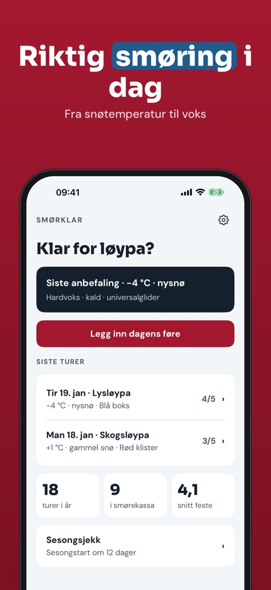
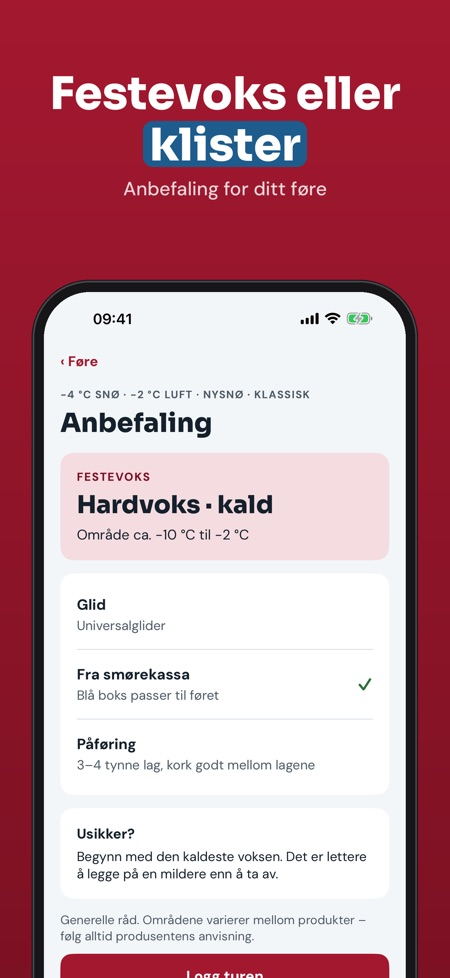
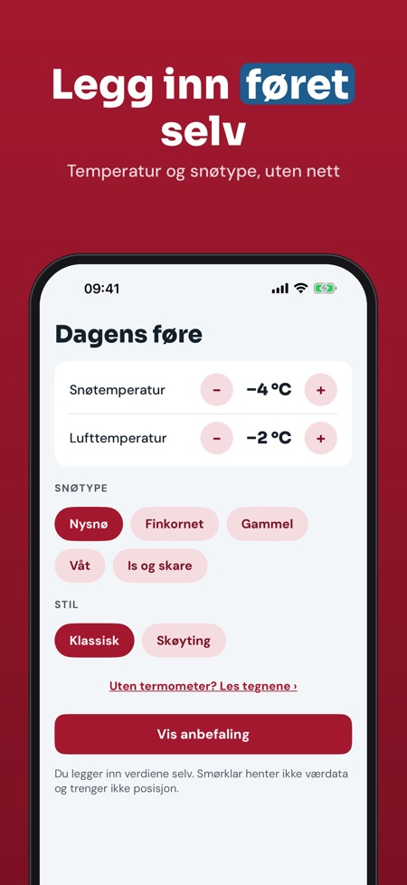

Grip wax & glide for skiing. Enter snow temperature and conditions and get the right wax class – grip wax or klister. With a wax box and wax log, offline on the trail.



Smørklar helps you choose wax for cross-country skiing: enter snow temperature, air temperature and snow type, and get a suggested wax class for grip and glide.
The app is in Norwegian, Swedish and Finnish.
The full version is a one-time purchase that unlocks all conditions, the klister guide, an unlimited log and the season check. No subscription.
Smørklar gives general advice and is not affiliated with any wax brand. Always follow the manufacturer's instructions. The app does not fetch weather data.